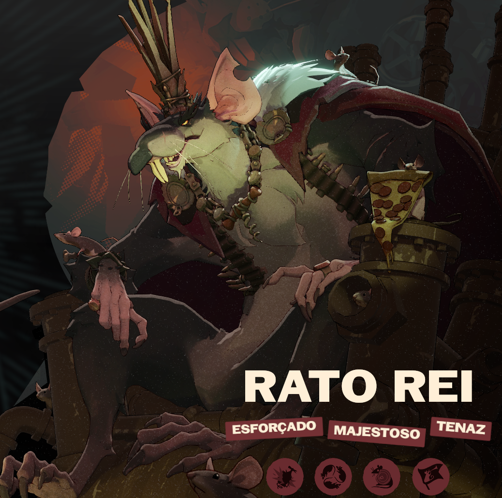
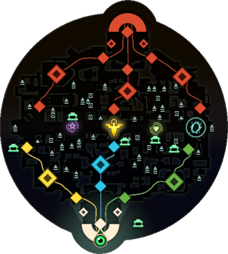
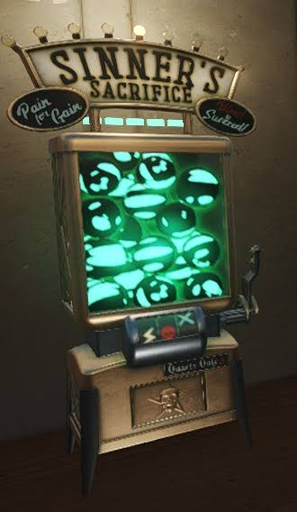
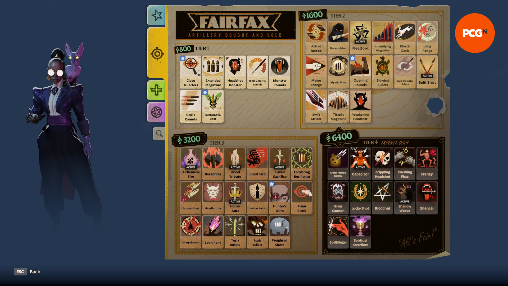
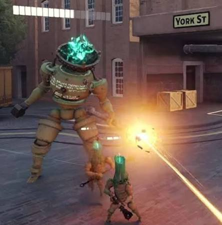
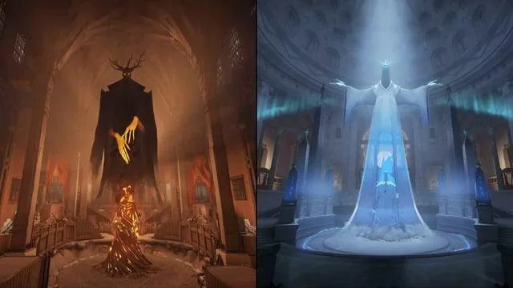

- Porque você deveria Jogar?
Um Take Novo
Deadlock é a tentativa da Valve de misturar dois gêneros que, à primeira vista, parecem bem diferentes: o hero shooter e o MOBA.
Trazendo a combinação perfeita das melhores caracteristicas de ambos os genêros. A movimentação frenética de um jogo de tiro em terceira pessoa com a estratégia, o sistema de progressão e as batalhas por objetivos de um MOBA. O resultado é um jogo em que não basta ter uma boa mira. Você precisa de estrategias e uma tomada de decisões. Cada partida exige decisões constantes, e uma boa jogada não depende apenas de quem consegue eliminar mais inimigos, mas também de quem entende melhor o funcionamento do mapa.
Personagens Carismaticos
Deadlock nem lançou para o publico ainda mas já possui mais de 30 personagens, cada um com uma gameplay e tema completamente diferente do outro, desde estilo de gameplay para o conceito e design do personagem.
O jogo consegue explorar diferentes estilos de jogabilidade sem se tornar repetitivo, oferecendo uma variedade de personagens capaz de agradar praticamente qualquer tipo de jogador. Alem de que, cada personagem possui uma identidade própria, seja por seu visual, personalidade, história ou habilidades, fazendo com que todos tenham algo único a oferecer. Você não escolhe apenas aquele que melhor combina com seu estilo de jogo, mas também aquele cuja personalidade e conceito mais lhe agradam, criando uma conexão que torna a experiência ainda mais divertida e faz com que você queira conhecer cada vez mais esse universo.
Como exemplo
Rato Rei

Um dos personagens favoritos da comunidade, que é muito prezado pelo seu design engraçado mas com muito detalhe. Sem contar que Jogos desse genero nao costumam lançar personagens que seriam considerados "feios" ou muito detalhados pois eles focam muito em poder vender skins, mas Deadlock mostra que o jogador vem em primeiro lugar dadno um pacote completo para um personagem tão simples.
A Valeve não erra uma!
Já é uma regra básica do mundo dos games, se a Valve ta fazendo, o Jogo vai ser sucesso.
A empresa já é bem famosa por diversos jogos como
- Half-Life
- Portal
- Counter-Strike
- Team Fortress 2
É claro que nem todo jogo da empresa se tornou um sucesso, e Deadlock ainda precisa evoluir bastante. Mas o potencial da combinação de gêneros, a variedade de personagens e as constantes atualizações durante o desenvolvimento tornam o projeto interessante de acompanhar e de se investir.
- Começando o Jogo
Como Receber o Convite para Jogar
Atualmente, Deadlock ainda não está disponível para o público geral. O acesso é limitado a convites enviados por pessoas que já participam do playtest. Mas nada que uma Comunidade dedicada não possa resolver. Segue o passo-a-passo
- Passo: Tenha uma Conta na Steam.
- Passo: Tenha uma Conta no Discord
- Passo: Encontre seu codigo de amigo. No aplicativo da Steam, entre em sua página de perfil, depois procure pela página de amigos e acesse-a, então acesse a opção "adicionar amigos", ao entrar você encontrara seu código de amigo.
- Passo: entre no link em seguinte que lhe levara a um grupo do discord. Acesse o canal "deadlock-acess",
e então mande uma mensagem que contenha seu codigo de amigo.
Por exemplo "Hello, can i have an invite! friend code: (seu código de amigo)"
- Passo: Esperar. espere até que algum membro lhe manda um pedido de amizade, aceite o pedido e depois ele também vai te enviar o convite para jogar DeadLock
Ápos essa etapas, você poderá baixar o Jogo e aproveitar.
Regras Básicas do Modo de Jogo
Se você nunca jogou um MOBA, não se preocupe. No começo, Deadlock pode parecer uma mistura caótica de tiros, habilidades e jogadores voando pelas ruas. Mas a lógica da partida é relativamente simples quando você entende seus objetivos.
O objetivo principal é destruir a base inimiga. Para chegar até ela, você precisa avançar pelo mapa, derrotar os defensores e trabalhar junto da sua equipe.
1. Domine as rotas

Avance pelas rotas junto dos seus Troopers, as unidades controladas pelo jogo. Elas ajudam a pressionar as defesas inimigas e criam oportunidades para você avançar.
2. Colete almas

As almas são um dos principais recursos da partida. Você as utiliza para comprar itens e fortalecer seu personagem. Aprender a coletá-las de maneira eficiente é essencial para não ficar para trás.
3. Comprando os itens

Escolher os itens certos é uma das partes mais essenciais para fortalecer seu personagem durante a partida. Se você ainda não sabe quais comprar, pode utilizar a barra de pesquisa de builds dentro do próprio jogo para encontrar recomendações de outros jogadores. Outra opção é acessar o Statlocker, um site que ajuda você a encontrar builds e estratégias. Lembre-se de adaptar suas compras conforme a situação da partida!
Statlocker4. Destrua as defesas

Avance contra os Guardiões e os Walkers para abrir caminho pelo território adversário. Não adianta passar a partida inteira lutando se sua equipe não progride nos objetivos.
5. Destrua o Patron

Depois de superar as defesas necessárias, sua equipe poderá avançar até o Patron inimigo. Destruí-lo é o objetivo final para vencer a partida.
Encontrando o Seu "Main"
Todo jogador possui aquele personagem especial com que ele se indentifica e se pega, seja pela seu estilo de jogo ou por sua aparencia. Esse, é o seu "main"
"Mas como eu faço para encontrar o meu main?". O primeiro passo é experimentar. Não escolha um personagem apenas porque ele é popular ou porque alguém disse que é o mais forte. Um herói considerado excelente por um jogador experiente pode não combinar com a maneira como você gosta de jogar, e o jogo está em um bom estado de balancemaneto onde todos os herois são bons se você jogar da maneira correta.
Uma boa maneira de descobrir seu main é escolher três personagens que chamaram sua atenção e jogar algumas partidas com cada um. Observe com qual deles você se diverte mais, entende melhor as habilidades e consegue contribuir para a equipe.
e caso queira saber um pouco mais sobre tipos de herois e alguns exemplo clique aqui
acesse uma lista de tipos de personagens